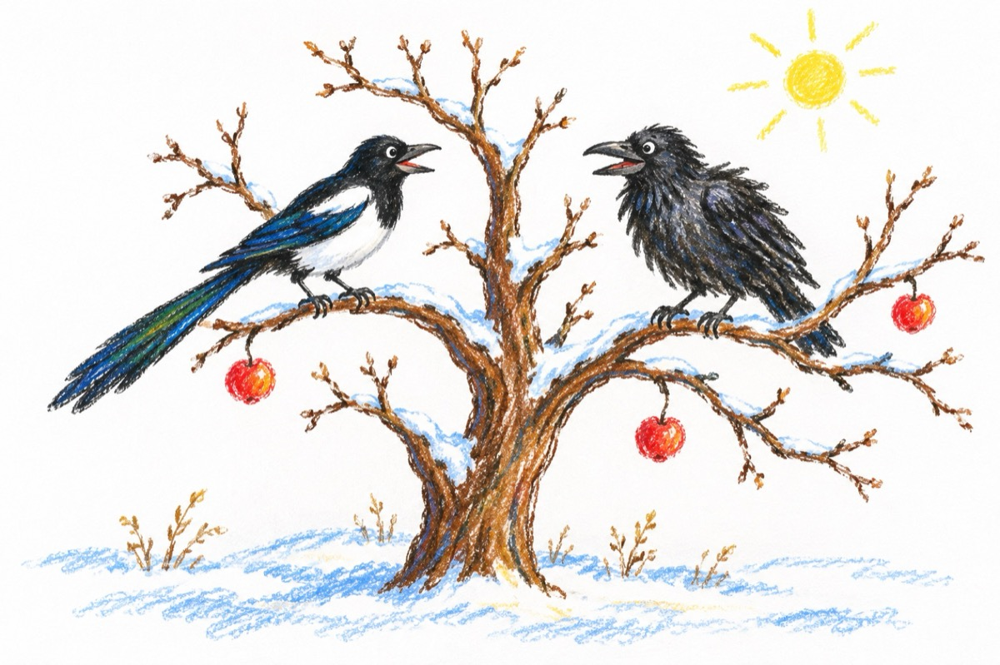

Dialog iernos
Ce poate fi mai trist în plină iarnă,
Decât un pom fără de frunză,
Și-n el sosind, o biată coțofană,
În croncănitul ciorii ce se-amuză!
Ce faci aici, alergi printre coclauri,
Sărind prin crengi, umblând pe la cuibare?
Dai semne mari cum văd de disperare,
Și speri cumva să-ți vină vreo salvare?
Nici pene nu mai ai deloc pe tine.
De la pisicile de prin ogradă
Și speri la vară că o să-ți fie bine
Dar cred că-n loc de cap tu te conduci din coadă!
Mă uit la tine, dragă cioară
Că până la urmă, îmi ești ca o surată.
Dar neagră ești la suflet, ca pe-afară
Și văd cum râde-un hârb de-o oală spartă.
Atâta doar că eu sunt mândra coțofană,
Iar tu, o biată ciufulită cioară!...
Vasile Groza